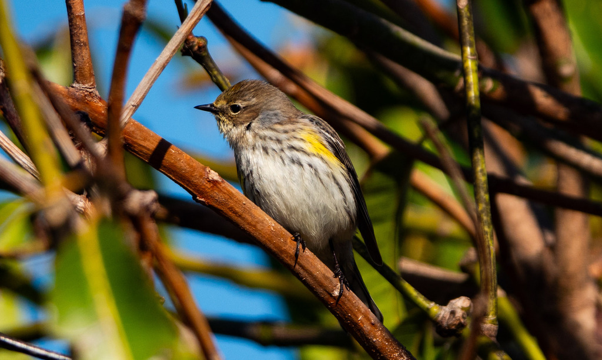

- The most abundant warbler in North America — and one of the most reliable winter visitors to Palma Sola. Look for the bright yellow rump patch flashing as it flies away. Birders affectionately call them 'butter-butts.'
- They are the only warbler that can digest the waxes in bayberries and wax myrtles. That rare digestive trick lets them winter farther north than any other warbler — and keeps them common across Florida all winter long.
- Extraordinarily versatile foragers: they glean insects from bark, hover-snatch flying bugs like a flycatcher, pick berries from shrubs, forage on the ground, and in Florida have even been spotted drinking the juice from fallen oranges.
- Two forms exist under one species name. The eastern 'Myrtle' form — the one you'll see here — has a white throat and bold dark cheek patch. The western 'Audubon's' form has a yellow throat; it almost never reaches Florida.
Medium-large warbler; 4.7–5.9 inches long. Full-bodied with a large head, sturdy bill, and long, narrow tail — noticeably heftier than most other warblers.
Brownish-gray above, pale and finely streaked below, with a persistently bright yellow rump patch and small yellow patches on the sides of the chest. The white throat, framed by a dusky cheek patch, is the key field mark for the eastern 'Myrtle' form.
Striking: blue-gray back with black streaks, black face mask, bold white throat, black breast bib, white wing bars, and vivid yellow patches on the crown, sides, and rump.
Browner and more streaked than males in all seasons, but the yellow rump is always present and is the most reliable single field mark.
The most useful sound is the call: a sharp, flat chek (sometimes rendered as check), given constantly while foraging and in flight — often the first indication the bird is present. Males sing a slow, soft, sweetly whistled warble or trill; the pitch is mostly even, rising or falling slightly, and the song speeds up toward the end, lasting 1–3 seconds. Only males sing, mainly on the breeding grounds and during late-winter pre-migration.
The bright yellow rump, visible the moment the bird takes flight, is diagnostic in all plumages. Perched birds show a white throat (not yellow — that would indicate the rare western Audubon's form), a dusky cheek patch, and small yellow side patches. In flight, look also for white spots in the outer tail feathers. The sharp, flat check call is distinctive and easily learned.
Primarily insectivorous in summer (caterpillars, beetles, gnats, aphids, wasps, grasshoppers, and spiders), but switches heavily to fruit and berries in fall and winter. Key winter foods in Florida include wax myrtle berries, juniper, poison ivy, dogwood, grapes, and Virginia creeper. They also take wild seeds from goldenrod and beach grasses, and will visit feeders for suet, raisins, sunflower seeds, and peanut butter. In Florida they have been recorded drinking the juice from fallen oranges.
Check the mid-story and shrub layer throughout the park, particularly near fruiting wax myrtle, cabbage palms with berries, or any dense shrubby edge. Also scan the outer branches of taller trees where the birds frequently sally out after insects. Listen for the flat check call — it carries well and often arrives before the bird is visible. Loose flocks may move through quickly, so a calling bird is often your best cue to stop and scan.
Present in Florida from late September through April; most abundant October through March. Active throughout daylight hours; foraging activity is highest in morning and late afternoon. Winter birds are present and conspicuous on almost any walk through the park during those months. Departing birds in late March and April may show bright spring plumage.
Observe quietly from a short distance. Flocks can be approachable; avoid flushing them from fruiting shrubs where they are feeding.

- © Rob Carr (CC-BY-NC), via iNaturalist